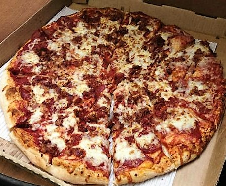
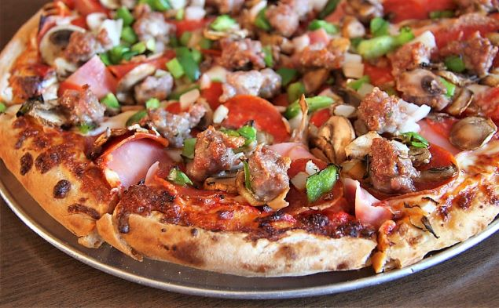

1. Mani Osteria & Bar
Ann Arbor, Michigan
Mani Osteria won the honor of MLive's annoual 'Michigan’s Best Pizza' competition in 2013, and still reins supreme. Their wood fired ovens give customers the signatiure flaky crust of traditional Neapolitan style pizza. The toppings are absolutely delicious, with each pre-designed pizza full of ingredients that are both authentic yet innoviate.

Dough:
Crust:
2. Giordano's
Chicago, Illinois
In terms of authentic Chicago style pizza, there truly isn't a place that does it better than Giordano's. Despie being packed full of fresh and delicious cheese, veggies, and meats, the dough and crust maintain a firm structure.

Dough:
Crust:
3. Jolly Pumpkin
Old Mission Peninsula, Michigan
Jolly Pumpkin is one of the few places where the dough actually tastes like it's made daily. The dough also has a uniquely delicious flavor from being infused with lots of handcrafted beer and then cooked on a marble slab. The toppings are satisfactory, but truly inferior to the dough and crust.
Dough:
Crust:
4. Olivera's Restaurant
Portland, Michigan
One of my favorie part of my family's summer reunions at my aunt and uncle's house is the family trip to Olivera's. Since I am not a huge fan of pizza sauce, Olivera's pizza has a special place in my heart. The pepperonis have a nice spiciness and crunch to them. Unfortuanetly, the cheese is fairly bland and gooey.
Dough:
Crust:
5. JT's Pizza & Spirits
Grand Rapids, Michigan
JT's has a much more small-town pizza place feel,which makes the atmosphere fun, but the pizza only average. The toppings are always fresh and tasty; however, the crust is usually a little tough to each, and the dough is usually a little on the soggy side.
Dough:
Crust: